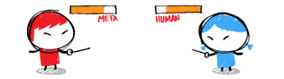

Sobre humans.txt
Què és?
 Un fitxer TXT que conté la informació sobre les persones que han treballat en un lloc
web.
Un fitxer TXT que conté la informació sobre les persones que han treballat en un lloc
web.
Per què un TXT?
 És fàcil i ràpid de crear. Perquè no és intrusiu amb el codi i més cops els
propietaris dels llocs volen que els autors signin el seu lloc web.
És fàcil i ràpid de crear. Perquè no és intrusiu amb el codi i més cops els
propietaris dels llocs volen que els autors signin el seu lloc web.

On va?
A l arrel del lloc web, al costat del robots.txt.

Per què he de fer-ho?
No estàs obligat. És una iniciativa per conèixer els autors dels llocs web.

A qui he d afegir?
A qui vulguis, sempre que els hi agradi aparèixer. Desenvolupadors, dissenyadors, SEO...

Meta Name vs. humans.txt?
És un complement per donar més informació dels autors.

El web és per a humans...
Sempre ho diem. Generem un arxiu per informar de qui som nosaltres.

Cercant un estàndard
Ens agrada que les coses tinguin un estàndard. humans.txt és la nova tendència.